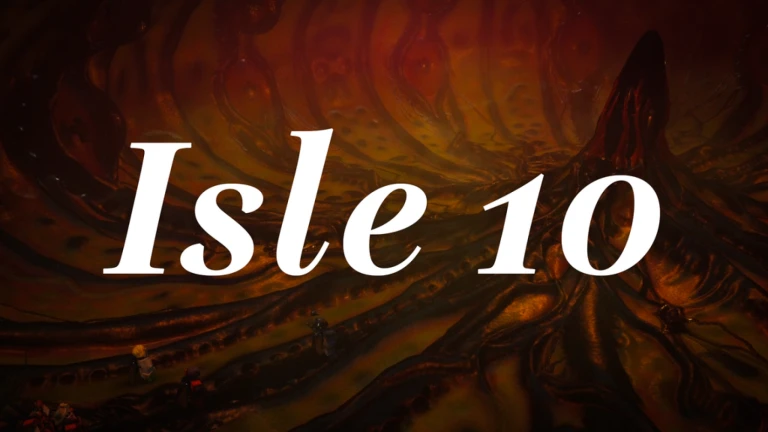
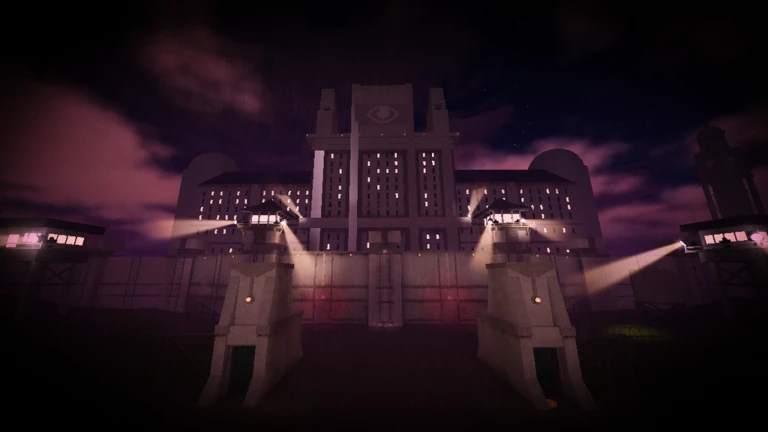
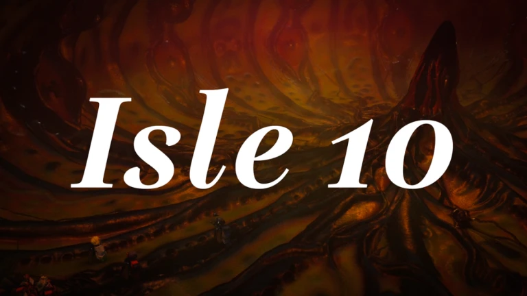
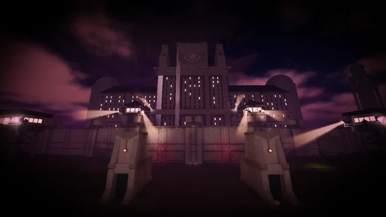

아이콘
썸네일1

썸네일2

썸네일3
썸네일4
썸네일5
썸네일6
썸네일7
썸네일8
썸네일9
트레일러
아이콘
썸네일1

썸네일2

썸네일3
썸네일4
썸네일5
썸네일6
썸네일7
썸네일8
썸네일9
트레일러
A little late teehee
| (번역 없음) |
/ 조금 늦었어요, 헤헤 /
Brought here against your will.
| 당신의 의지와는 달리 여기에 끌려왔다. |
No one has ever escaped alive.
| 아무도 여길 살아 나가지 못했다... |
...
Something's lurking.
| 섬에 뭔가 있다. |
There has to be some way out.
| 나가는 방법이 있을 것이다. |
M to open Journal.
| M키를 눌러 일지 열기. |
Click people to use weapons.
| 대상을 클릭하여 무기 사용하기. |
Update 10.
| 업데이트 10. |
(Built by Bad_B0y, Scripted by treebee 63, Art by swopped, Game Icon and Badorkbee logo by Nayusagi, Trailer by Hapun. This game is a work in progress, please join our dis for help and feedback.)
| (Bad_B0y가 제작, treebee 63 이 스크립팅, 게임 아이콘과 그룹 로고는 Nayusagi가, 트레일러는 Hapun이 만듦. 이 게임은 제작 중이니, 디스코드에 들어와서 도움이나 피드백을 해주세요!) |
/ (Bad_B0y가 제작, treebee 63이 스크립팅, 아트는 swopped가, 게임 아이콘과 Badorkbee 로고는 Nayusagi가, 트레일러는 Hapun이 만듦. 이 게임은 제작 중이니, 도움과 피드백을 위해 디스코드에 참여해 주세요!) /